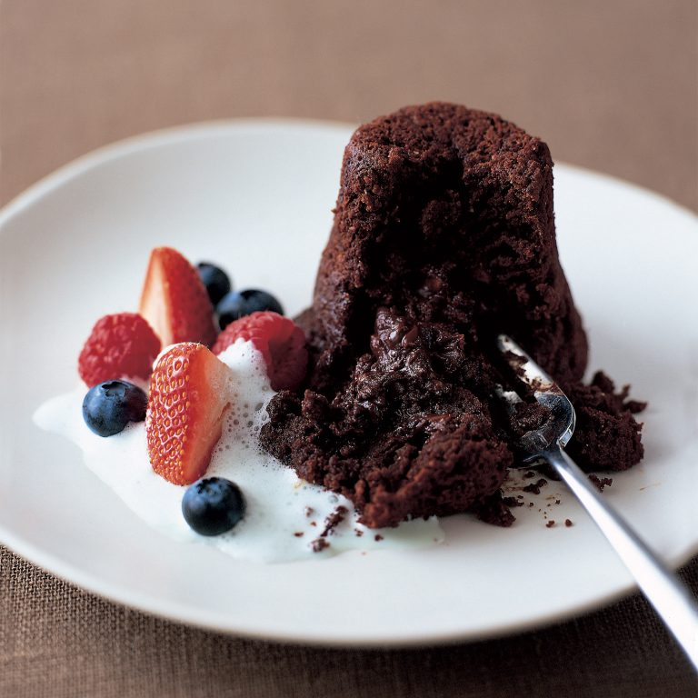

Šokolādes fondants
Gatavosim sātīgas šokolādes biskvīta kūciņas ar uz mēles kūstošu krēmīgu šokolādes viduci. Neapšaubāmi, šis būs īpašs deserts. Izskatīsies debešķīgi, ja mēs šīs kūciņas nokaisīsim ar kakao pulveri vai smalki sarīvētu šokolādi un garnēsim ar svaigām ogām; un garšos dievīgi, ja tās pasniegsim ar vaniļas putukrējumu vai saldējuma bumbiņu. Lai top šis karaliskais deserts!
Sastāvdaļas (divām porcijām)
- 100 g tumšās šokolādes
- 100 g sviesta
- 2 olas
- 3 ēd. k. cukura
- 2 ēd. k. miltu
- 2 ēd. k. kakao
- 1 ēd. k. sviesta formiņu ietaukošanai
- pēc izvēles pasniegšanai: ogas, putukrējums, saldējums...
Pagatavošana (25 min.)
- Formiņas ietauko ar sviestu un vienmērīgi izkaisa ar kakao.
- Bļodā liek gabaliņos sadrupinātu šokolādi, cukuru, sviestu. Visu izkausē ūdens peldē.
- Pievieno olas un iemaisa masā.
- Pieber miltus un visu samaisa, līdz iegūst viendabīgu mīklu bez kunkuļiem. Lej formiņās.
- Cep 180 grādos 10-12 minūtes. Pasniedz pārkaisot ar kakao un dekorējot ar ogām.